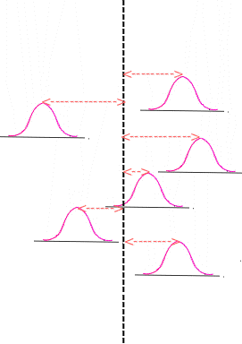

2.
Measurement Process Characterization
2.1.
Characterization
2.1.1.
What are the issues for characterization?
|
|
Sources of time-dependent variability
|
Variability is the tendency of the measurement process to produce
slightly different measurements on the same test item, where conditions
of measurement are either stable or vary over time, temperature,
operators, etc. In this chapter we consider two sources of
time-dependent variability:
- Short-term variability ascribed to the precision of the
instrument
- Long-term variability related to changes in environment and
handling techniques
|
|
Depiction of two measurement processes with the same short-term
variability over six days where process 1 has large between-day
variability and process 2 has negligible between-day variability
|
Process 1 Process 2
Large between-day variability Small between-day variability

 Distributions of short-term measurements over 6 days where distances
from the centerlines illustrate between-day variability
Distributions of short-term measurements over 6 days where distances
from the centerlines illustrate between-day variability
|
|
Short-term variability
|
Short-term errors affect the precision of the
instrument. Even very precise instruments exhibit small changes caused
by random errors. It is useful to think in terms of measurements
performed with a single instrument over minutes or hours; this is
to be understood, normally, as the time that it takes to complete
a measurement sequence.
|
|
Terminology
|
Four terms are in common usage to describe short-term phenomena. They
are interchangeable.
- precision
- repeatability
- within-time variability
- short-term variability
|
|
Precision is quantified by a standard deviation
|
The measure of precision is a standard deviation. Good precision
implies a small standard deviation. This standard deviation is called
the short-term standard deviation of the process or the repeatability
standard deviation.
|
|
Caution -- long-term variability may be dominant
|
With very precise instrumentation, it is not unusual to
find that the variability exhibited by the measurement process from
day-to-day often exceeds the precision of the instrument because of
small changes in environmental conditions and handling techniques
which cannot be controlled or corrected in the measurement process.
The measurement process is not completely characterized until this
source of variability is quantified.
|
|
Terminology
|
Three terms are in common usage to describe long-term phenomena. They
are interchangeable.
- day-to-day variability
- long-term variability
- reproducibility
|
|
Caution -- regarding term 'reproducibility'
|
The term 'reproducibility' is given very specific definitions in some
national and international standards. However, the definitions are
not always in agreement. Therefore, it is used here only in a generic
sense to indicate variability across days.
|
|
Definitions in this Handbook
|
We adopt precise definitions and provide data collection and analysis
techniques in the sections on check standards
and measurement control for
estimating:
In the section on gauge studies,
the concept of variability is extended to include very long-term
measurement variability:
We refer to the standard deviations associated with these three kinds
of uncertainty as "Level 1, 2, and 3 standard deviations", respectively.
|
|
Long-term variability is quantified by a standard deviation
|
The measure of long-term variability is the standard deviation of
measurements taken over several days, weeks or months.
The simplest method for doing this assessment is by analysis of a
check standard database. The measurements on
the check standards are structured to cover a long time interval and to
capture all sources of variation in the measurement process.
|